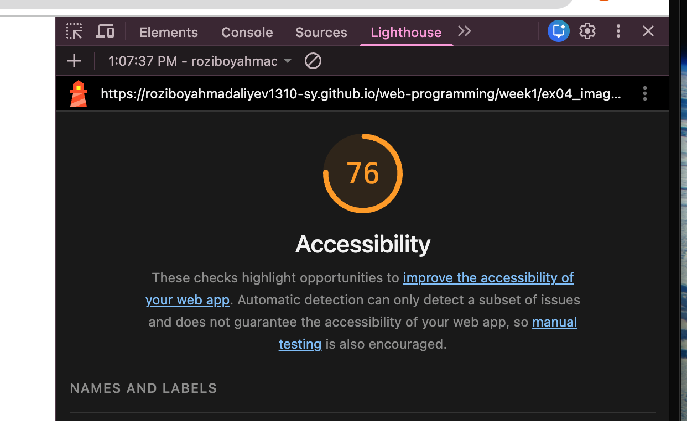
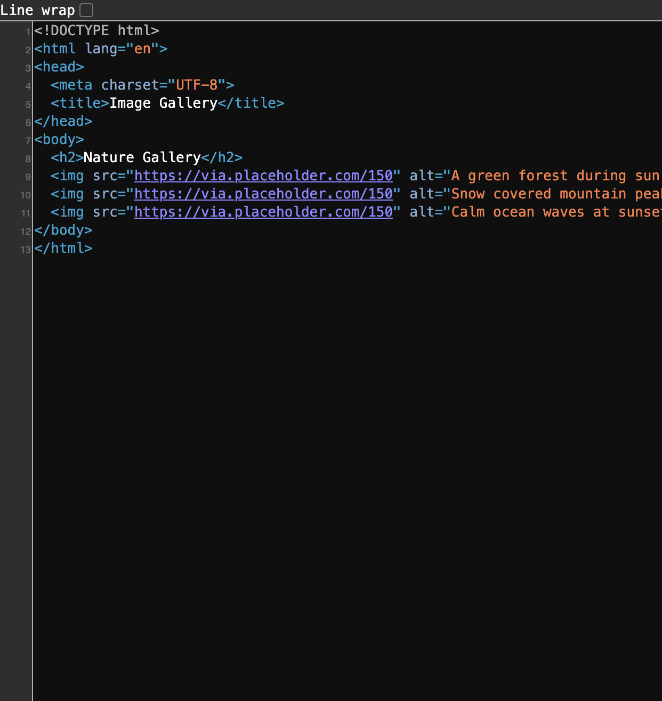

1. Week 1 · Image Gallery
76 / 100

Restored image alternative text
The test version omitted the image description. It has been restored in the current file.

View before and restored code
Before:
<img src="https://via.placeholder.com/150">
Restored:
<img src="https://via.placeholder.com/150"
alt="A green forest during sunrise">